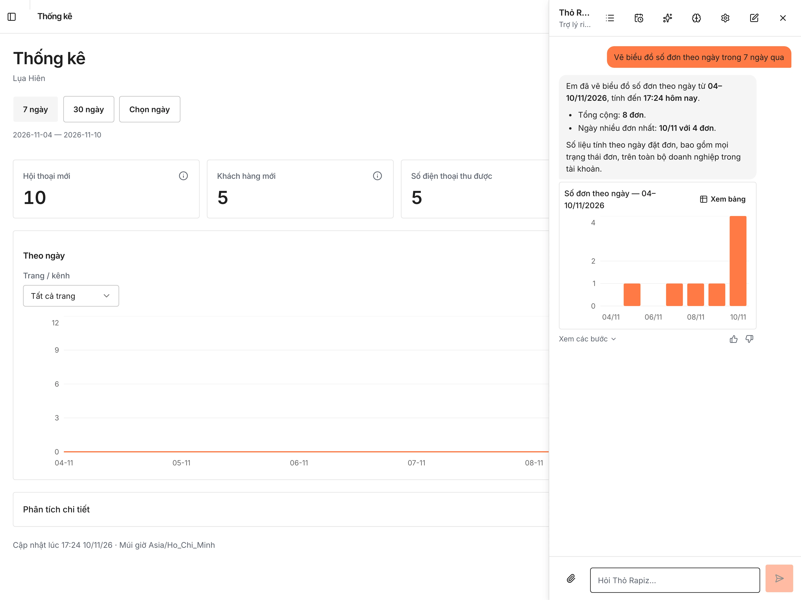

Rapiz Trợ lý & thống kê
Tuần này
bao nhiêu đơn?
Hỏi bằng tiếng Việt, Trợ lý Rapiz đọc số liệu cửa hàng rồi trả lời bằng chữ, biểu đồ hoặc bảng. Việc cần sửa thành đề xuất chờ bạn duyệt.
 Trợ lý RapizTrợ lý riêng của chủ shop
Trợ lý RapizTrợ lý riêng của chủ shopTuần này có bao nhiêu đơn?
Lụa Hiên có 5 đơn hàng trong tuần này, từ thứ Hai 09/11 đến 17:24 hôm nay 10/11/2026. Số này tính theo thời điểm đặt đơn, gồm tất cả trạng thái.
Thử hỏi trợ lý.
Chọn một câu hỏi của chủ shop Lụa Hiên. Ba câu trả lời đầu lấy từ lần hỏi thật trên cửa hàng demo. Thay đổi chỉ có hiệu lực khi bạn bấm Áp dụng.
Vẽ biểu đồ số đơn theo ngày trong 7 ngày qua
Em đã vẽ biểu đồ số đơn theo ngày từ 04 đến 10/11/2026, tính đến 17:24 hôm nay. Tổng cộng 8 đơn. Ngày nhiều đơn nhất là 10/11 với 4 đơn.
GIAO DIỆN THỐNG KÊ
Hỏi ngay
cạnh con số.
- Câu trả lời của trợ lý
- Trợ lý vẽ biểu đồ từ số liệu thật của cửa hàng, kèm nút Xem bảng để xem từng con số.


CÒN TRONG TÍNH NĂNG NÀY
Trợ lý còn
làm được gì.
- Nhập sản phẩm từ Excel và ảnh
Gửi tệp Excel, CSV hoặc ảnh sản phẩm. Trợ lý soạn bản xem trước, bạn duyệt rồi mới tạo.
Khung trợ lý › Đính kèm tệp - Cảnh báo khi cần
Đặt cảnh báo khách chờ trả lời quá lâu hay sản phẩm sắp hết hàng, gửi trong ứng dụng, email hoặc thông báo đẩy.
Khung trợ lý › Lịch báo cáo - Nhớ điều bạn dặn
Trợ lý ghi nhớ cách bạn muốn làm việc. Bạn xem và xoá từng điều bất cứ lúc nào.
Khung trợ lý › Trợ lý nhớ gì - Nhiều doanh nghiệp, một màn hình
Một tài khoản quản lý nhiều doanh nghiệp, xem số liệu chung rồi bấm vào từng nơi.
Tổng quan các business
CÂU HỎI THƯỜNG GẶP
Trước khi
giao việc cho trợ lý.
Trợ lý có tự sửa bot hay dữ liệu không?
Không. Mọi thay đổi hiện thành thẻ đề xuất. Chỉ khi bạn bấm Áp dụng thì thay đổi mới có hiệu lực.
Trợ lý xem được số liệu nào?
Số liệu của doanh nghiệp bạn đang quản lý, qua truy vấn chỉ đọc. Dữ liệu của mỗi doanh nghiệp được tách riêng.
Báo cáo gửi qua kênh nào?
Trong ứng dụng, email hoặc thông báo đẩy trên điện thoại.
Thống kê đếm những gì?
Hội thoại mới, khách hàng mới, số điện thoại thu được và tin nhắn khách gửi, xem theo ngày và lọc theo trang hoặc kênh.